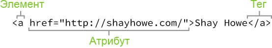
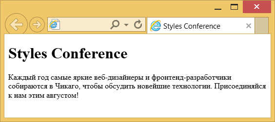
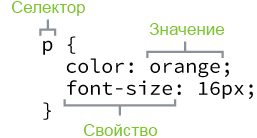
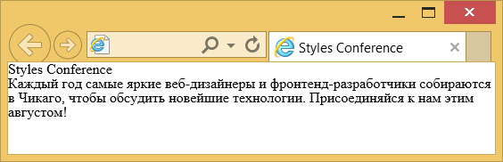

Создание первой веб-страницы
Перед тем, как мы начнём наше путешествие по урокам создания сайтов на HTML и CSS, важно понимать различия между двумя языками, синтаксис каждого языка и некоторую основную терминологию.
Что такое HTML и CSS?
HTML (HyperText Markup Language, язык разметки гипертекста) задаёт структуру содержимого и его смысл, определяя такой контент как, к примеру, заголовки, абзацы или изображения. CSS (Cascading Style Sheets) или каскадные таблицы стилей — это язык презентаций созданный для оформления внешнего вида контента, использующий, например, шрифты или цвета.
Эти два языка — HTML и CSS независимы друг от друга и должны таковыми и оставаться. CSS не должен быть написан внутри HTML-документа и наоборот. Как правило, HTML всегда будет представлять содержимое, а CSS всегда будет определять его оформление.
При таком понимании разницы между HTML и CSS давайте погрузимся в HTML более подробно.
Основные термины HTML
Перед началом работы с HTML вы, вероятно, столкнётесь с новыми и часто странными терминами. Со временем вы ознакомитесь со всеми ними подробнее, но сейчас вы должны начать с трёх основных терминов HTML — элементы, теги и атрибуты.
Элементы
Элементы указывают, как определять структуру и содержимое объектов на странице. Некоторые из часто используемых элементов включают в себя несколько уровней заголовков (определены как элементы с <h1> до <h6>) и абзацев (определены как <p>); в список можно включить элементы <a>, <div>, <span>, <strong> и <em> и многие другие.
Элементы идентифицируются с помощью угловых скобок <>, окружающих имя элемента. Таким образом, элемент будет выглядеть так:
<a>Теги
Добавление угловые скобок < и > вокруг элемента создаёт то, что известно как тег. Теги наиболее часто встречаются в парах открывающих и закрывающих тегов.
Открывающий тег отмечает начало элемента. Он состоит из символа <, затем идёт имя элемента и завершается символом >; например, <div>.
Закрывающий тег отмечает конец элемента. Он состоит из символа < с последующей косой чертой и именем элемента и завершается символом >; например, </div>.
Содержимое, которое находится между открывающим и закрывающим тегами, является содержимым этого элемента. Ссылка, к примеру, будет иметь открывающий тег <a> и закрывающий тег </a>. Что находится между этими двумя тегами будет содержимым ссылки.
Так, теги ссылок будут выглядеть примерно так:
<a>...</a>Атрибуты
Атрибуты являются свойствами, применяемыми для предоставления дополнительной информации об элементе. Наиболее распространённые атрибуты включают в себя атрибут id, который идентифицирует элемент; атрибут class, который классифицирует элемент; атрибут src, который определяет источник встраиваемого содержимого; и атрибут href, который указывает ссылку на связанный ресурс.
Атрибуты определяются в открывающем теге после имени элемента. В общем, атрибуты включают в себя имя и значение. Формат для этих атрибутов состоит из имени атрибута со знаком равенства за ним, а затем в кавычках идёт значение атрибута. Например, элемент <a> с атрибутом href будет выглядеть следующим образом:
<a href="http://shayhowe.com">Shay Howe</a>Демонстрация основных терминов HTML
Данный код будет отображать текст «Shay Howe» на веб-странице и при щелчке на этот текст ведёт пользователя на http://shayhowe.com. Элемент ссылки объявлен с помощью открывающего тега <a> и закрывающего тега </a> охватывающих текст, а также атрибута и значения адреса ссылки объявленной через href="http://shayhowe.com" в открывающем теге.

Рис. 1.01. Синтаксис HTML в виде схемы включает элемент, атрибут и тег
Теперь, когда вы знаете что такое элементы HTML, теги и атрибуты, давайте взглянем воедино на нашу первую веб-страницу. Если что-то выглядит здесь новым, не беспокойтесь — мы расшифруем всё по ходу.
Настройка структуры документа HTML
HTML-документы представляют собой простые текстовые документы, сохранённые с расширением .html, а не .txt. Чтобы начать писать HTML вначале нужен текстовый редактор, который вам удобен в использовании. К сожалению, сюда не входит Microsoft Word или Pages, поскольку это сложные редакторы. Двумя наиболее популярными текстовыми редакторами для написания HTML и CSS являются Dreamweaver и Sublime Text. Бесплатные альтернативы также Notepad++ для Windows и TextWrangler для Mac.
Все HTML-документы содержат обязательную структуру, которая включает следующие декларации и элементы: <!DOCTYPE html>, <html>, <head> и <body>.
Объявление типа документа или <!DOCTYPE html> находится в самом начале HTML-документа и сообщает браузерам, какая версия HTML применяется. Поскольку мы будем использовать последнюю версию HTML, наш тип документа будет просто <!DOCTYPE html>. После этого идёт элемент <html> означающий начало документа.
Внутри <html> элемент <head> определяет верхнюю часть документа, включая разные метаданные (сопроводительная информация о странице). Содержимое внутри элемента <head> не отображается на самой веб-странице. Вместо этого он может включать название документа (который отображается в строке заголовка окна браузера), ссылки на любые внешние файлы или любые другие полезные метаданные.
Всё видимое содержимое веб-страницы будет находиться в элементе <body>. Структура типичного HTML-документа выглядит следующим образом:
<!DOCTYPE html>
<html lang="ru">
<head>
<meta charset="utf-8">
<title>Привет, мир!</title>
</head>
<body>
<h1>Привет, мир!</h1>
<p>Это веб-страница.</p>
</body>
</html>Демонстрация структуры HTML-документа
Этот код показывает документ, начиная с объявления типа документа, <!DOCTYPE html>, затем сразу идёт элемент <html>. Внутри <html> идут элементы <head> и <body>. Элемент <head> содержит кодировку страницы через тег <meta charset="utf-8"> и название документа через элемент <title>. Элемент <body> включает в себя заголовок через элемент <h1> и абзац текста через <р>. Поскольку и заголовок и абзац вложены в элемент <body>, они видны на веб-странице.
Когда элемент находится внутри другого элемента, известный также как вложенный, хорошей идеей будет добавить к нему отступ, чтобы сохранить структуру документа хорошо организованной и читабельной. В предыдущем коде оба элемента <head> и <body> вложены и сдвинуты внутри элемента <html>. Структура отступов для элементов продолжается с новыми добавленными элементами внутри <head> и <body>.
Самозакрывающиеся элементы
В предыдущем примере элемент <meta> был единственным тегом, который не включал закрывающий тег. Не переживайте, это было сделано намеренно. Не все элементы состоят из открывающих и закрывающих тегов. Некоторые элементы просто получают содержимое или поведение через атрибуты в пределах одного тега. <meta> является одним из таких элементов. Содержимое элемента <meta> в примере присваивается с помощью атрибута charset и значения. К другим типичным самозакрывающимся элементам относятся:
- <br>
- <embed>
- <hr>
- <img>
- <input>
- <link>
- <meta>
- <param>
- <source>
- <wbr>
Приведённая структура, сделанная с помощью объявления типа документа <!DOCTYPE html> и элементов <html>, <head> и <body>, является довольно распространённой. Мы хотим сохранить эту структуру документа удобной, поскольку будем часто её применять при создании новых HTML-документов.
Валидация кода
Независимо от того, насколько аккуратно мы пишем наш код, ошибки неизбежны. К счастью, при написании HTML и CSS у нас есть валидаторы для проверки нашей работы. W3C предлагает валидаторы HTML и CSS, которые сканируют код на ошибки. Проверка нашего кода не только помогает правильно отображать его во всех браузерах, но и помогает обучению передовому опыту при написании кода.
На практике
В качестве веб-дизайнеров и фронтенд-разработчиков мы можем позволить себе роскошь посещать ряд замечательных конференций, посвящённых нашему ремеслу. Мы собираемся организовать собственную конференцию Styles Conference и создать для неё сайт на протяжении следующих уроков. Вот так!
- Откройте текстовый редактор, создайте новый файл с именем index.html и сохраните его в место, которое не забудете. Я собираюсь создать папку на рабочем столе с именем styles- conference и сохранить этот файл в ней; не стесняйтесь делать то же самое.
В файле index.html добавим структуру документа, в том числе тип документа <!DOCTYPE html> и элементы <html>, <head> и <body>.
<!DOCTYPE html> <html lang="ru"> <head> </head> <body> </body> </html>Внутри элемента <head> добавим элементы <meta> и <title>. Элемент <meta> должен включать в себя правильные атрибуты charset и значение, в то время как элемент <title> должен содержать название страницы, скажем «Styles Conference».
<head> <meta charset="utf-8"> <title>Styles Conference</title> </head>Внутри элемента <body> добавим элементы <h1> и <p>. Элемент <h1> должен включать в себя желаемый заголовок — давайте снова воспользуемся «Styles Conference», а элемент <р> должен включать в себя простой абзац для представления нашей конференции.
<body> <h1>Styles Conference</h1> <p>Каждый год самые яркие веб-дизайнеры и фронтенд-разработчики собираются в Чикаго, чтобы обсудить новейшие технологии. Присоединяйся к нам этим августом!</p> </body>Пришло время взглянуть на то, что мы сделали! Отыщем наш файл index.html (у меня он находится в папке styles-conference на рабочем столе). Дважды щёлкнув по этому файлу или перетащив его в браузер мы откроем его для просмотра.

Рис. 1.02. Наши первые шаги при создании сайта Styles Conference
Давайте переключимся немного, отойдя от HTML и взглянем на CSS. Помните, HTML определяет содержимое и структуру наших веб-страниц, в то время как CSS определяет их визуальный стиль и внешний вид.
Основные термины CSS
В дополнение к терминам HTML есть и несколько основных терминов CSS, с которыми вам нужно будет ознакомиться. Эти термины включают селекторы, свойства и значения. Как и с терминологией HTML, чем больше вы работаете с CSS, тем больше эти термины становятся вашей второй натурой.
Селекторы
При добавлении элементов на веб-страницу они могут быть оформлены с помощью CSS. Селектор определяет, на какой именно элемент или элементы в HTML нацелиться и применить к ним стили (такие как цвет, размер и положение). Селекторы могут включать в себя комбинацию различных показателей для выбора уникальных элементов, в зависимости от того, насколько конкретными мы желаем быть. Например, мы хотим выбрать каждый абзац на странице или выбрать только один конкретный абзац.
Селекторы, как правило, связаны со значением атрибута, вроде значения id или class или именем элемента, вроде <h1> или <р>.
В CSS селекторы сочетаются с фигурными скобками {}, которые охватывают стили, применяемые к выбранному элементу. Этот селектор нацелен на все элементы <p>.
p { ... }Свойства
Как только элемент выбран, свойство определяет стили, которые будут к нему применены. Имена свойств идут после селектора, внутри фигурных скобок {} и непосредственно перед двоеточием. Существует множество свойств, которые мы можем использовать, такие как background, color, font-size, height и width и другие часто добавляемые свойства. В следующем коде мы определяем свойства color и font-size, применяемые ко всем элементам <p>.
p {
color: ...;
font-size: ...;
}Значения
Пока мы только выбрали элемент через селектор и определили, какой стиль через свойства мы хотели бы к нему применить. Теперь мы можем задать поведение этого свойства через значение. Значения могут быть определены как текст между двоеточием и точкой с запятой. Ниже мы выбираем все элементы <p> и устанавливаем значение свойства color как orange, а значение свойства font-size как 16 пикселей.
p {
color: orange;
font-size: 16px;
}Для проверки, в CSS наш набор правил начинается с селектора, затем сразу же идут фигурные скобки. В этих фигурных скобках располагаются объявления, состоящие из пар свойств и значений. Каждое объявление начинается со свойства, за которым следует двоеточие, значение свойства и, наконец, точка с запятой.
Распространённой практикой является сдвиг пары свойств и значений внутри фигурных скобок. Как и с HTML, отступы помогают держать наш код организованным и понятным.

Рис. 1.03. Структура синтаксиса CSS включает селектор, свойства и значения
Знание нескольких основных терминов и общего синтаксиса CSS — это отличный старт, но у нас есть еще несколько пунктов для изучения, прежде чем мы прыгнем в глубину. В частности, мы должны внимательнее рассмотреть, как селекторы работают в CSS.
Работа с селекторами
Селекторы, как уже упоминалось ранее, указывают, какие элементы HTML будут стилизованы. Важно полностью понимать как использовать селекторы и как они действуют. Первым шагом должно стать знакомство с различными типами селекторов. Мы начнём с самых основных селекторов: селекторы типа, классы и идентификаторы.
Селекторы типа
Селекторы типа нацелены на элементы по их типу. Например, если мы хотим ориентироваться на все элементы <div> мы должны использовать селектор div. Следующий код показывает селектор типа для элементов <div>, а также соответствующий HTML.
CSS
div { ... }HTML
<div>...</div>
<div>...</div>Классы
Классы позволяют выбрать элемент на основе значения атрибута class. Селекторы классов немного более конкретны, чем селекторы типа, так как они выбирают определённую группу элементов, а не все элементы одного типа.
Классы позволяют применять одинаковые стили сразу к разным элементам, используя то же значение атрибута class для нескольких элементов.
В CSS классы обозначаются с точкой впереди, за которой следует значение атрибута класса. Ниже селектор класса выбирает все элементы, содержащие значение awesome атрибута class, включая элементы <div> и <p>.
CSS
.awesome { ... }HTML
<div class="awesome">...</div>
<p class="awesome">...</p>Идентификаторы
Идентификаторы ещё точнее, чем классы, так как они нацелены только на один уникальный элемент за раз. Подобно тому, как селекторы классов используют значение атрибута class, идентификаторы используют значение атрибута id в качестве селектора.
Независимо от типа отображаемого элемента, значение атрибута id может быть использовано только один раз на странице. Если id присутствуют, то они должны быть зарезервированы для важных элементов.
В CSS идентификаторы обозначаются с символом решётки впереди, после чего идёт значение атрибута id. Здесь идентификатор выберет только элемент, содержащий атрибут id со значением shayhowe.
CSS
#shayhowe { ... }HTML
<div id="shayhowe">...</div>Дополнительные селекторы
Селекторы чрезвычайно мощная штука и описанные выше относятся к наиболее распространённым селекторам, которые нам попадаются. Эти селекторы только начало. Существует много продвинутых селекторов и они легко доступны. Когда освоитесь с ними, не бойтесь посмотреть и некоторые более прогрессивные.
Ладно, начинаем собирать всё вместе. Мы добавляем элементы на страницу внутри нашего HTML, затем можем выбрать эти элементы и применить к ним стили с помощью CSS. Теперь давайте соединим точки между HTML и CSS, чтобы эти два языка работали вместе.
Подключение CSS
Чтобы заставить наш CSS говорить с нашим HTML мы должны указать на CSS-файл из HTML. Хорошей практикой является включение всех наших стилей в одном внешнем файле, на который есть указатель внутри элемента <head> нашего HTML-документа. Использование одного внешнего CSS позволяет нам применять одни и те же стили по всему сайту и быстро вносить в него изменения.
Другие варианты добавления CSS
Другие варианты подключения CSS включают в себя использование внутренних и встроенных стилей. Вы можете встретить эти варианты в реальности, но они, как правило, не одобряются, так как делают обновление сайтов громоздким и неповоротливым.
Для создания нашей внешней таблицы стилей мы снова хотим использовать выбранный текстовый редактор, чтобы создать новый текстовый файл с расширением .css. Наш CSS-файл должен быть сохранён в той же папке или подпапке, где находится и наш HTML-файл.
Внутри элемента <head> применяется элемент <link>, который определяет отношения между HTML и CSS-файлами. Поскольку мы связываем с CSS, то используем атрибут rel со значением stylesheet для указания их отношений. Кроме того, атрибут href применяется для указания местоположения или пути к CSS-файлу.
В следующем примере HTML-документа элемент <head> указывает на внешний стилевой файл.
<head>
<link rel="stylesheet" href="main.css">
</head>Чтобы CSS отображался правильно, значение пути атрибута href должно напрямую совпадать с тем, где сохранён CSS-файл. В предыдущем примере файл main.css хранится в том же месте, что и HTML-файл, известном также как корневая папка.
Если CSS-файл располагается в подпапке, то значение атрибута href должно, соответственно, соотноситься с этим путём. Например, если наш файл main.css был сохранён в подпапке с именем stylesheets, то значеним атрибута href будет stylesheets/main.css. Здесь используется косая черта (или слэш), чтобы указать перемещение в подпапку.
На данный момент наши страницы начинают оживать, медленно, но верно. Мы пока не вникали в CSS слишком глубоко, но вы, возможно, заметили, что у некоторых элементов есть стили, которые мы не объявляли в нашем CSS. Это браузер навязывает свои собственные предпочтительные стили для этих элементов. К счастью, мы можем переписать эти стили достаточно легко, что мы и сделаем дальше с помощью сброса CSS.
Использование сброса CSS
Каждый браузер имеет свои собственные стили по умолчанию для различных элементов. То, как Google Chrome отображает заголовки, абзацы, списки и так далее, может отличаться от того, как это делает Internet Explorer. Для обеспечения совместимости с разными браузерами стал широко использоваться сброс CSS.
Сброс CSS берёт все основные элементы HTML с заданным стилем и обеспечивает единый стиль для всех браузеров. Эти сбросы обычно включают в себя удаление размеров, отступов, полей или дополнительные стили понижающие эти значения. Поскольку каскадирование CSS работает сверху вниз (скоро об этом узнаете) — наш сброс должен быть в самом верху нашего стиля. Это гарантирует, что эти стили прочитаются первыми и все разные браузеры станут работать с общей точки отсчёта.
Есть куча разных сбросов CSS доступных для применения, у всех них есть свои сильные стороны. Один из самых популярных от Эрика Мейера, его сброс CSS адаптирован для включения новых элементов HTML5.
Если вы чувствуете себя немного авантюристом, есть также Normalize.css, созданный Николасом Галлахером. Normalize.css фокусируется не на использовании жёсткого сброса для всех основных элементов, но вместо этого на установлении общих стилей для этих элементов. Это требует более глубокого понимания CSS, а также знания того, что вы хотели бы получить от стилей.
Кроссбраузерность и тестирование
Как упоминалось ранее, разные браузеры отображают элементы по-своему. Важно признать значение кроссбраузерности и тестирования. Сайты не должны выглядеть исключительно одинаково во всех браузерах, но должны быть близки. Какие браузеры вы хотите поддерживать и в какой степени — это решение вы должны будете сделать на основе того, что лучше для вашего сайта.
Существует несколько вещей, на которые следует обращать внимание при написании CSS. Хорошей новостью является то, что это всё по силам и нужно немного терпения чтобы это освоить.
На практике
Вернёмся назад, где мы в последний раз остановились на нашем сайте конференции и посмотрим, как мы можем добавить немного CSS.
- Внутри нашей папки styles-conference давайте создадим новую папку с именем assets. В ней мы будет хранить все ресурсы для нашего веб-сайта, такие как стили, изображения, видео и т. д. Для наших стилей пойдём дальше и добавим ещё одну папку stylesheets внутри папки assets.
- Используя текстовый редактор создадим новый файл с именем main.css и сохраним его в папке stylesheets, которую мы только что создали.
Просматривая файл index.html в браузере мы можем видеть, что элементы <h1> и <p> уже содержат стиль по умолчанию. В частности, у них задан уникальный размер шрифта и пространство вокруг них. Используя сброс Эрика Мейера мы можем смягчить эти стили, что позволит каждому из них начинать с одинаковой базы. Для этого загляните на его сайт, скопируйте код и вставьте его в верхней части нашего файла main.css.
/* http://meyerweb.com/eric/tools/css/reset/ 2. v2.0 | 20110126 License: none (public domain) */ html, body, div, span, applet, object, iframe, h1, h2, h3, h4, h5, h6, p, blockquote, pre, a, abbr, acronym, address, big, cite, code, del, dfn, em, img, ins, kbd, q, s, samp, small, strike, strong, sub, sup, tt, var, b, u, i, center, dl, dt, dd, ol, ul, li, fieldset, form, label, legend, table, caption, tbody, tfoot, thead, tr, th, td, article, aside, canvas, details, embed, figure, figcaption, footer, header, hgroup, menu, nav, output, ruby, section, summary, time, mark, audio, video { margin: 0; padding: 0; border: 0; font-size: 100%; font: inherit; vertical-align: baseline; } /* HTML5 display-role reset for older browsers */ article, aside, details, figcaption, figure, footer, header, hgroup, menu, nav, section { display: block; } body { line-height: 1; } ol, ul { list-style: none; } blockquote, q { quotes: none; } blockquote:before, blockquote:after, q:before, q:after { content: ''; content: none; } table { border-collapse: collapse; border-spacing: 0; }- Наш файл main.css начинает принимать форму, так что подключим его к файлу index.html. Откройте index.html в текстовом редакторе и добавьте элемент <link> в <head>, сразу после элемента <title>.
- Поскольку мы указываем на стили через элемент <link> добавьте атрибут rel со значением stylesheet.
Мы также включим ссылку на наш файл main.css используя атрибут href. Помните, наш файл main.css сохранён в папке stylesheets, который находится внутри папки assets. Таким образом, значение атрибута href, который является путём к нашему файлу main.css, должно быть assets/stylesheets/main.css.
<head> <meta charset="utf-8"> <title>Styles Conference</title> <link rel="stylesheet" href="assets/stylesheets/main.css"> </head>
Время для проверки нашей работы и просмотра, как уживаются вместе наши HTML и CSS. Открытие файла index.html (или обновление страницы, если она уже открыта) в браузере должно показать немного другой результат, чем раньше.

Рис. 1.04. Наш сайт Styles Conference со сбросом CSS
Демонстрация и исходный код
Ниже вы можете просмотреть сайт Styles Conference в его нынешнем состоянии, а также скачать исходный код сайта на данный момент.
Просмотр сайта Styles Conference или Скачать исходный код
Резюме
Итак, всё хорошо! Мы сделали несколько больших шагов в этом уроке.
Подумать только, теперь вы знаете основы HTML и CSS. Поскольку мы продолжим и вы потратите больше времени на написание HTML и CSS, вам станет гораздо комфортнее работать с этими двумя языками.
Напомним, что мы рассмотрели следующее:
- Разница между HTML и CSS.
- Знакомство с элементами HTML, тегами и атрибутами.
- Настройка структуры вашей первой веб-страницы.
- Знакомство с селекторами CSS, свойствами и значениями.
- Работа с селекторами CSS.
- Указатель на CSS из HTML.
- Важность CSS сброса.
Теперь давайте поближе рассмотрим HTML и познакомимся немного с семантикой.
Ресурсы и ссылки
- Common HTML terms via Scripting Master
- CSS Terms & Definitions via Impressive Webs
- CSS Tools: Reset CSS via Eric Meyer
- Normalize.css via Nicolas Gallagher
- An Intro to HTML & CSS via Shay Howe
См. также

Все материалы сайта доступны по лицензии Creative Commons «Attribution-NonCommercial» («Атрибуция — Некоммерческое использование») 4.0 Всемирная, если не указано иное.